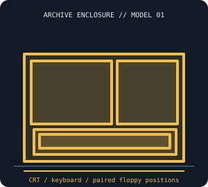

[ IDENTIFIED SYSTEM // COMPAQ PORTABLE (1983) ]
Compaq Portable (1983) System Enclosure
Self-contained luggable with a 9-inch monochrome CRT, internal board and clip-on keyboard; approximate closed envelope 20.5 × 14.5 × 8.5 in (W × D × H).

MODEL / REVISION BOUNDARY: This record is for the 1983 original Portable. Do not substitute Portable Plus or Portable II/III service parts or external dimensions; regional line-input and drive assemblies differ.
Enclosure specifications
| Exact model / generation | Compaq Portable, first-generation luggable, 1983 (not Portable Plus, Portable II, or Portable III). |
|---|---|
| External dimensions | Approximately 20.5 × 14.5 × 8.5 in (W × D × H), reported for the original luggable; handle, feet and regional mains cord can alter the measured shipping envelope. |
| Form factor / board layout | Luggable desktop / integrated CRT; steel chassis and molded case with Compaq-specific motherboard and CRT assembly, not an ATX case. |
| Proprietary power supply | Internal Compaq-specific mains supply and CRT power section; neither an ATX PSU nor a generic external brick. Retain the correct input-voltage version and earth/CRT wiring. |
| External bays / ports | No standardized external drive bays. Two front 5.25-inch floppy apertures are fitted as drive positions, not interchangeable modern 5.25-inch bay hardware. |
| Internal bays / mounts | Two half-height 5.25-inch floppy mechanisms in the original dual-drive build; exact drive/faceplate and controller revisions vary. No standardized 3.5-inch mount. |
| Service / compatibility | Use the first-generation Portable operations/service documentation and match the chassis and board assembly before replacing drives, supply or CRT parts. CRT and internal PSU are hazardous; discharge/service only with qualified procedures. |
| Revision identification | This record is for the 1983 original Portable. Do not substitute Portable Plus or Portable II/III service parts or external dimensions; regional line-input and drive assemblies differ. |
Service, restoration & fit notes
Use the first-generation Portable operations/service documentation and match the chassis and board assembly before replacing drives, supply or CRT parts. CRT and internal PSU are hazardous; discharge/service only with qualified procedures.
Internal Compaq-specific mains supply and CRT power section; neither an ATX PSU nor a generic external brick. Retain the correct input-voltage version and earth/CRT wiring.
- Record the full model/type label, board and power-supply assembly numbers, drive labels and manual revision before disassembly.
- Preserve original shields, brackets, hinges, feet, keyboard/CRT harnesses and proprietary fasteners with this exact enclosure; do not assume contemporary PC standards apply.
- Dimensions are approximate where noted; measure the actual specimen and leave clearance for cables, vents, lids/handles and attached peripherals.
Manufacturer & archival manual citations
- Compaq Portable Computer Operations Guide (15 August 1983) — Internet ArchiveContemporary Compaq operating manual for the original Portable model.
- Compaq Portable SAMS ComputerFacts service manual — Old Crap vintage manual archiveArchived model-specific service reference; verify document coverage against the unit revision.
Manuals may cover only a stated revision or configuration; compare the title page and machine labels before applying procedures.